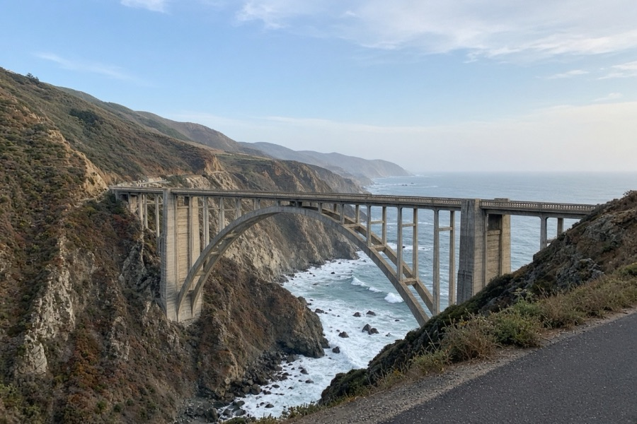
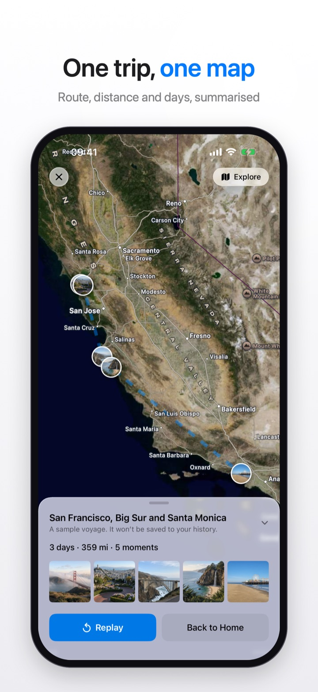

Pick a batch.
Choose photos and videos that carry a location. Trace reads the capture time and the place, nothing else.
iPhone · Photos · Maps
Pick photos with locations. Trace replays the trip on a map, in the order you took them.

How it feels
Choose photos and videos that carry a location. Trace reads the capture time and the place, nothing else.
Photos light up one by one, in the order you took them, while the camera follows your route across cities and ridgelines.
Switch to satellite and the map gets height. Hills and buildings rise under a route that is a real line through them.
Distance, days and the places you passed are gathered into a summary that stays in the app. Come back any time.

Try it right here
This is the sample voyage built into the app. Scrub the timeline and watch the camera follow the route.
Small details
Live Photos move and videos play in full. Three seconds per photo turns a trip into a short film.
Tilt the map so hills and buildings have height and your route is a real line through them.
Photo without a location? Search or drag a pin, and optionally write it back into the photo itself.
Turn on recording and the voyage plays out as a video, original sound included. Save it or share it in one tap.
Distance, days and the places you passed, gathered into a summary that stays in the app.
Your home map keeps every trip. Reopen any of them and keep remembering.
30 seconds
Private by construction
Switch airplane mode on. The replay logic doesn't notice, because it never needed the internet.
Maps and place names come from Apple's system services. Every other calculation runs on the device.
Read the privacy policyiPhone & iPad · iOS 17 or later · Free